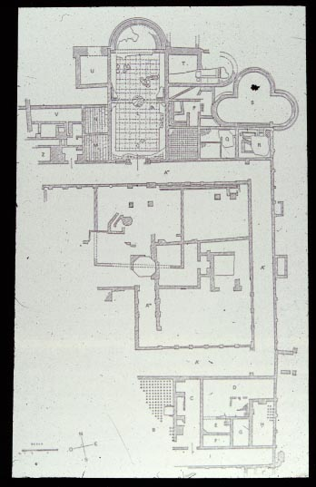
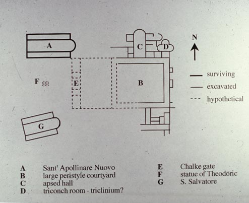

There had been palaces in Ravenna at least since it became capital
of
the western Roman empire, but no traces of those survive.
Theodoric
built onto the imperial palaces, and part of his palace has been found
archaeologically. The palace complex was large, as it included
not
only the royal/imperial residence, but also all of the offices of the
government.

Diagram showing what was discovered in the archaeological
excavation.
There are several rooms, some quite elaborate in shape, around a
courtyard.

Hypothetical reconstruction (by D. Deliyannis) of what the palace
complex
might have looked like. To the right are the excavated
remains.
To the left, (A) is the
church of Sant' Apollinare Nuovo (which still stands), and (G) is the
church of the Saviour,
which exists in runied form. At F there was probably a large
bronze statue of
Theodoric mounted on a horse.